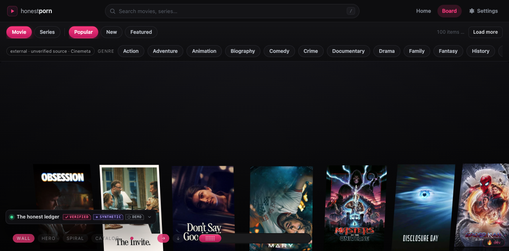
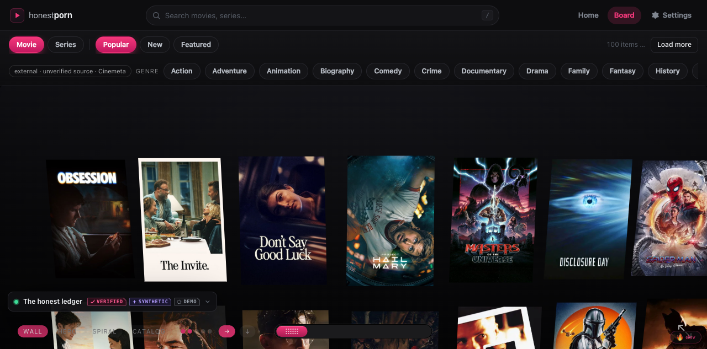
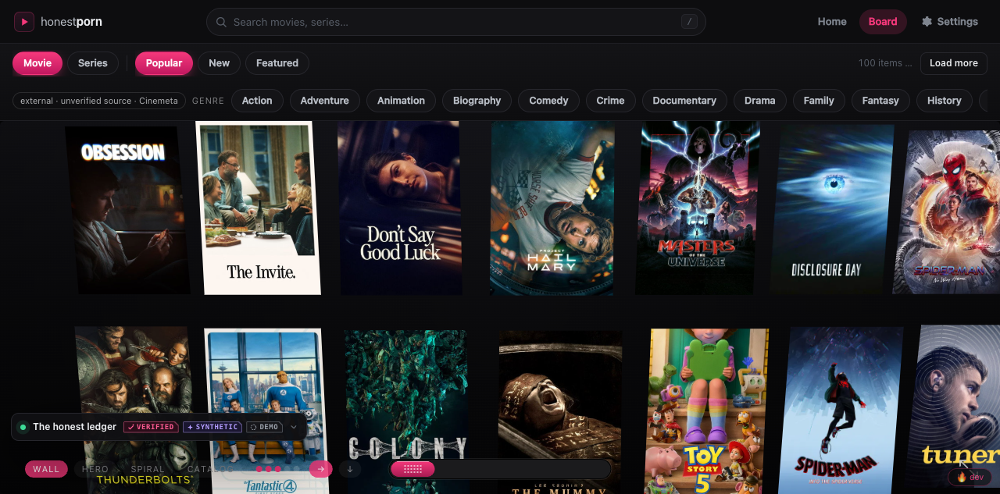
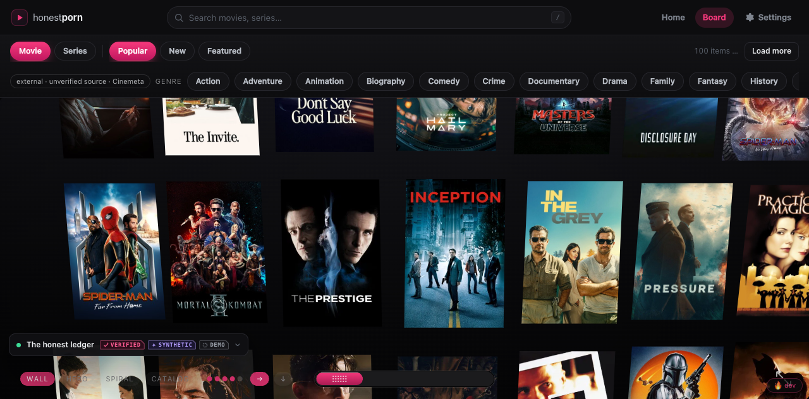
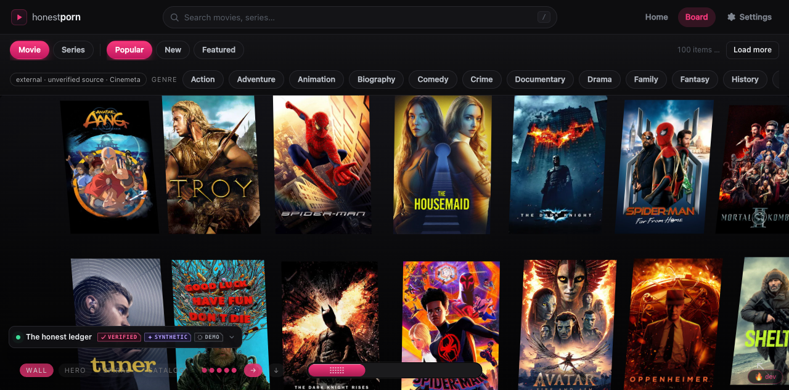
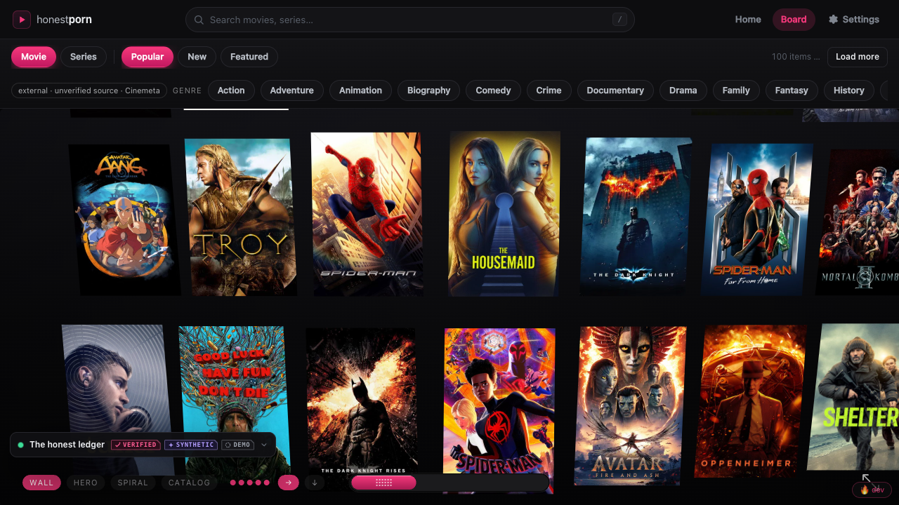
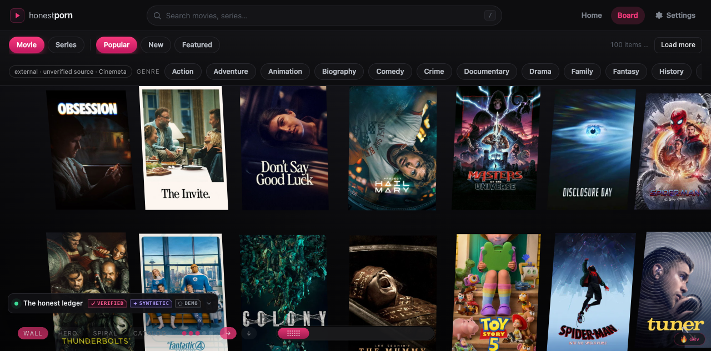
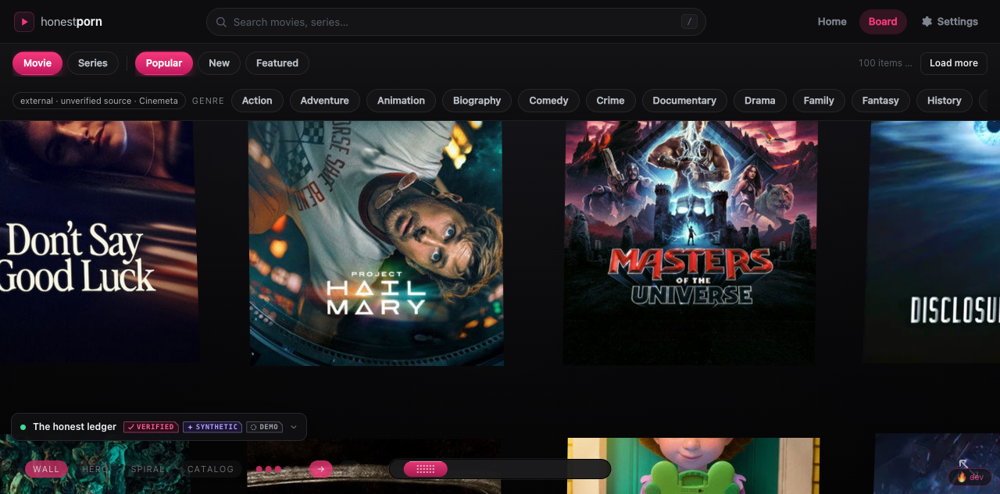
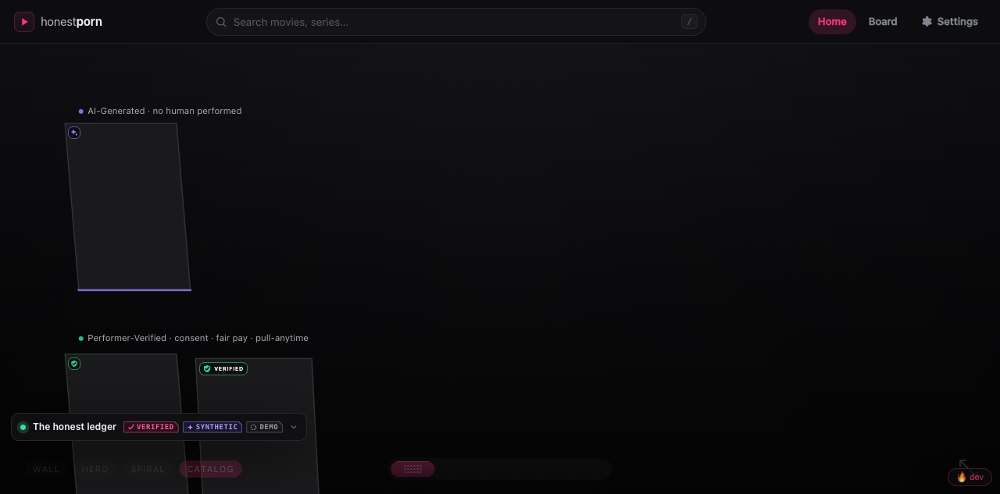
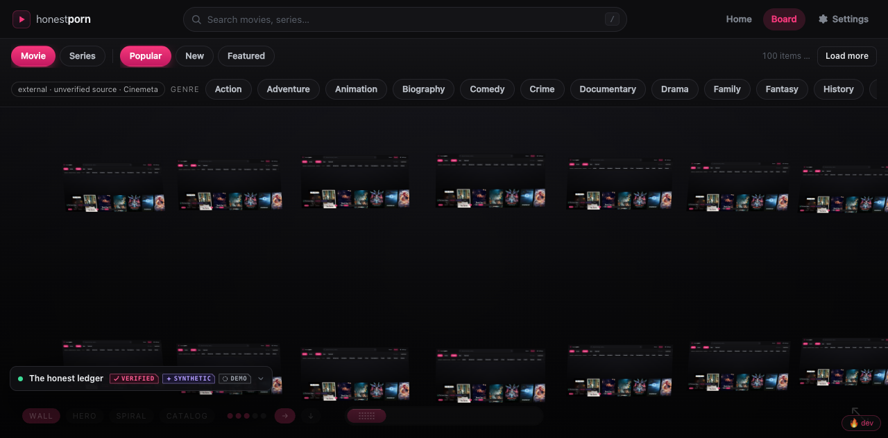

honestporn · HIGHREV fleet · lane report
The board's row control and navigation feel — made flawless. The 1–5 row control works with tall poster tiles, the camera never yanks while you browse, and a live-thumbnail preview mode scales to hundreds of feeds.
Verdict. Both tasks landed and were verified live in a browser driven against the served worktree. The row control — the reported failure — now visibly re-lays-out at every count from 1 to 5, at both a tall and a short viewport, and no background repaint clobbers the user's choice. Zoom is cursor-anchored, pan is free with inertia, and a 2.5 s repaint leaves the camera byte-identical. The follow-on live-preview mode refreshes only on-screen tiles, staggered and concurrency-capped, and is off by default so idle-zero holds. Owned file: js/wallview.js only. Commits 2cffd79 (rows) and d54c796 (live preview).
User feel-test, verbatim: “changing the ammount of rows doesnt work also in the board tab — its not allowing me to zoom or navigate.”
The board is a WallView built as { layout:"wall", rows:3 } with the default cells — 160×240 (a 2:3 poster), gap 46, so the vertical pitch is 286 px. layoutWall then capped the row count to what fits the viewport without clipping a cell:
var maxRows = Math.max(1, Math.floor((viewport.vh + gapY) / PITCH_Y)); var rows = clamp(config.rows | 0, 1, config.maxRows); if (rows > maxRows) rows = maxRows; // ← the clamp
With a 286 px pitch, maxRows evaluates to only 2–3 at a normal window height — often 2. So the higher row counts were silently discarded. Worse, the reversion was written back into the engine's state: relayout does if (res.rows) rows = res.rows, and layoutWall returned the clamped value — so setRows(5) became rows = 1–3 permanently, and every resize and every 2.5 s content poll re-clamped it too. The row dots, the number keys, and setRows() all appeared dead, and 100 items forced into one or two very long rows is exactly what “can't navigate” feels like. (The pan/zoom machinery itself was never broken — it was the single mega-row that made the board feel stuck.)
Three options were on the table: (a) honour the requested rows and let a tall multi-row wall be panned; (b) shrink the cells so N rows always fit; (c) a hybrid. I chose (a).
computeBounds() already unlocks vertical pan the moment content is taller than the viewport, and the wall is vertically centred on its origin, so more rows simply grow the wall symmetrically around the gaze. Nothing new was needed to make it navigable.catalogRows layout.relayout(false)), so the camera holds and the tiles reflow around the fixed gaze — consistent with hp-motion's arrival-vs-non-arrival rule and task 2's no-yank requirement.The fix is the removal of the clamp: rows = clamp(config.rows|0, 1, config.maxRows) and nothing more. Because the returned res.rows now always equals the request, the write-back is idempotent — a resize or poll can no longer revert the user's choice.
Driven with agent-browser at 1440×900 against the served worktree (byte-verified: the browser ran my worktree's js/wallview.js). Each shot is the real canvas; the engine's own getState().rows confirmed the number, and the row dots at bottom-left match it.






running:false confirmed the rAF slept when static.All measured from the engine's getState().cam and from screenshots, on the board (panLockedX:false).
| Check | Method | Result |
|---|---|---|
| Cursor-anchored wheel zoom | Real WheelEvent at screen (900,300); one notch each | PASS — zoom 1→1.197→1.433→2.054 (exactly e0.18n); cam drifted 532→678 toward the cursor. "Masters of the Universe" stayed under (900,300) from 1× to 2× (below). Zoom-out returned to the exact origin (532, −179.5, 1×) — lossless. |
| Free drag-pan + inertia | Pointer down/move/up | PASS — cam.x 532→3079 (drag + momentum overshoot); cam.y held on a horizontal drag. |
| Camera does not yank on a repaint | Re-set the same items (the non-arrival poll path) while zoomed 2.05× and panned, + 2.5 s settle | PASS — cam byte-identical before/after: (678.59, −216.71, 2.054). No re-frame. |
| Camera does not yank on resize | 1440×900 → 1280×720 | PASS — rows held at 3, cam held at −179.5. |
| Arrows / Home / End | Home key from an off-content pan | PASS — flew back to content start. |


Home-view regression. The registry home (#home, catalogRows layout — untouched by this change) still frames the trust lanes correctly at the top-left: labels “AI-Generated · no human performed” and “Performer-Verified · consent · fair pay · pull-anytime” with their badged tiles. hp-motion's home-camera fix is intact.

Turning on live previews for hundreds of feeds can't use hundreds of <video> elements (browsers cap at a few dozen; each HLS decode is heavy). The cheap primitive is a small <img> per tile, re-pulled periodically — no video decode, scales to hundreds. This lane owns that cheap-many half; the focused tile's real motion <video> overlay is hp-stream's.
Rather than build a parallel loader, the driver rides the wall's existing image pipeline — the same cache, the same concurrency-capped queue/pump (MAX_LOADS, the “laundromat”), and the same off-thread decode()-then-swap. A dedicated tl.live slot wins in the draw's src (so the reflection follows it too); a cache-busted, single-use URL is dropped the moment it decodes so the cache never grows.
| Requirement | How | Verified |
|---|---|---|
| Visible tiles only | tile.vis gate; live URL computed lazily only when a tile is on-screen | PASS — capable grew 16→36 only as tiles were panned into view (never 100); visibleSnapped tracked the current view across pans. |
| Throttled + staggered | Driver on a LIVE_TICK cadence refreshes only a slice per tick so one LIVE_MS sweep spreads over time | PASS — snapshots filled 2→9→16 over ~4 s; never a burst. |
| Global toggle + concurrency cap / queue | setLivePreview(on); pulls share the MAX_LOADS queue (overflow waits its turn) | PASS |
| Decode off-thread, swap after decode | img.decoding="async"; the tile's image is swapped only in the decode callback | PASS — clean swap, no half-painted flicker (below). |
| Reduced-motion → off | setLivePreview ANDs with !REDUCED | PASS — under emulated prefers-reduced-motion: reduce, enabling no-ops (livePreview stayed false, nothing snapped). |
| Zero console errors; idle-zero when off | No timer when off; rAF sleeps between refreshes | PASS — empty console throughout; off by default (capable:0 on the real, non-live catalog); running:false between refreshes even while on. |
Tested with an injected, network-free local source (a served screenshot) applied to every board item — I did not point the automated browser at a real cam CDN. So the mechanism is fully verified; the real Chaturbate snapshot fetch is unverified from here (see honest notes).

clearLive() undoes the live refit.https://thumb.live.mmcdn.com/riw/<room>.jpg pull (CORS, cadence, content) was not exercised — the board's catalog carries no live items, and I would not drive the automated browser at a real cam CDN.item.liveThumb (a full URL) first, else derives the Chaturbate URL from item.liveRoom or an id of the form chaturbate:<room>. Any of the three works out of the box; otherwise wall.setLiveThumbURL(fn). Turning previews on is wall.setLivePreview(true) — app.js is frozen in this lane, so whoever owns the previews UI wires that call.clearLive() restores the base image's aspect. A cam catalog that wants a wide cell is a data/layout decision (hp-stream/catalog), out of this lane's scope.agent-browser mouse wheel did not dispatch to the canvas in this harness, so wheel zoom was verified by dispatching a genuine WheelEvent through a test hook — it exercises the real onWheel/zoomAt path. Pointer events (drag-pan) dispatched normally.getState().rows; the served js/wallview.js was byte-verified equal to the worktree copy before trusting any behaviour.| Commit | File | What |
|---|---|---|
2cffd79 | js/wallview.js | Row control works with tall poster tiles — drop the no-clip cap; requested 1–5 rows honoured, surveyed by free vertical pan + cursor-anchored zoom. |
d54c796 | js/wallview.js | Live-thumbnail preview mode — visible-only, staggered, MAX_LOADS-capped, decode-off-thread, reduced-motion off, off by default (idle-zero). API: setLivePreview/getLivePreview/setLiveThumbURL, opts.livePreview. |